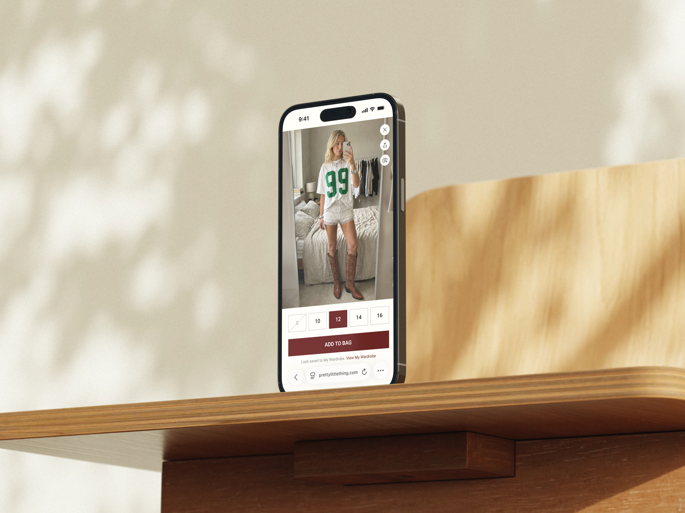
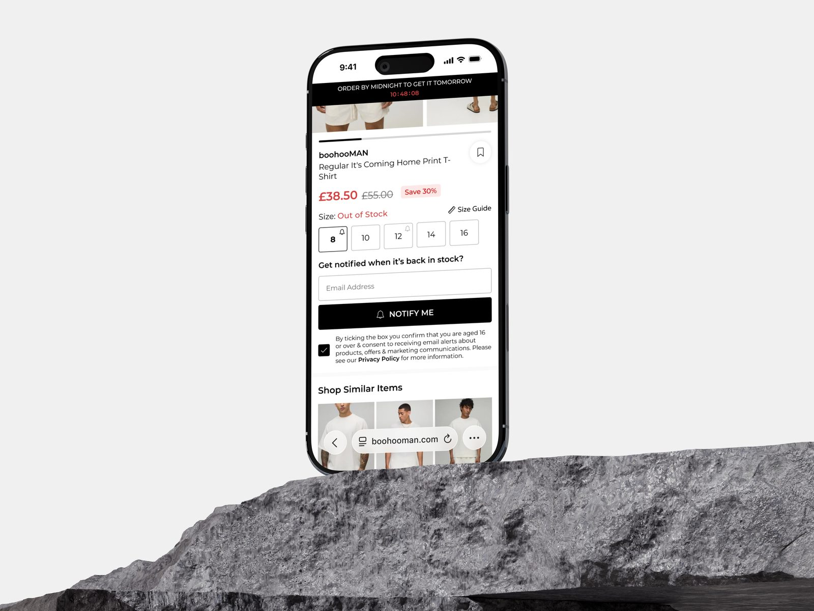

Overview
For the past three years I've led UX at Debenhams Group, setting up the UX function after the Debenhams acquisition and scaling it across all 21 brands in the group, designing industry-leading experiences while optimising for technical synergies and high-velocity delivery.
I was originally hired to work on Debenhams alone. The brief was a British institution being rebuilt as a digital department store, and the proposition was breadth: somewhere you could buy a fridge, some garden furniture and a pair of jeans in the same basket. Closer to Amazon than to a fashion retailer.
Once that worked, we scaled the framework and the tech stack across the group. Every brand now sits on a shared platform, but they sell to genuinely different people: a sell-everything department store, youth fashion brands competing on speed, and premium labels, none of which could be flattened into the same experience.
The brands include Debenhams, boohoo, boohooMAN, PrettyLittleThing, Karen Millen, Nasty Gal, Coast, Oasis, Warehouse, Dorothy Perkins, Burton and more.
Building the UX function
I defined and launched a new Debenhams UX function after the acquisition, establishing design processes, principles and a cross-functional operating model for the digital product and technology team, then grew it from a single brand into a group-wide UX function covering all 21 brands.
I'm the single most senior point of contact for UX/UI across the business: setting UX direction, representing UX cross-functionally, and coordinating priorities and requirements from the brands and departments across the group to define the UX roadmap and deliverables.
I set up a bi-weekly alignment forum with the e-commerce and creative leads from every brand in the group, covering design reviews, feedback and feature sign-off, alongside a monthly collaboration and innovation session focused on longer-term ideation.
One design system, 21 brands
I built and scaled a unified design system for all 21 brands that keeps each brand's own identity. It's maintained by a team of two designers and adopted by 50+ developers across multiple locations.
Underneath it is a layered token system (colour, typography, spacing, border radius and motion) that themes every brand through a single brand toggle attribute on the front end. Shared component families, including buttons, inputs, product cards and PLP, PDP, bag and checkout kits, plus a 130+ icon library, are skinned per brand from one source, with no manual overrides in design or in front end development.
It cut design and delivery timelines for new features across all brands from months to days, while more brands migrated onto a single unified tech stack, improving output quality and operational efficiency with small, lean design and development teams.
brands themed from one design system, each keeping its own identity.
icons in a shared library, skinned per brand from one source.
developers across multiple locations building with the system.
to design and deliver a new feature across brands, down from months.
Features
I led the rapid design, prototyping and development of industry-leading features, including virtual try-on, visual search, AI-powered e-commerce agents and recommendation capabilities, social-integrated shopping experiences and a new streamlined checkout.
I also supported the design and delivery of third party ancillary purchase and delivery services, such as product personalisation, product insurance, In-Post and Evri click and collect, SEEL delivery protection and extended returns.
CRO programme
I drove a continuous, group-wide CRO programme of 100+ A/B tests over three years, run per project across the group's brands and measuring conversion rate, AOV, revenue per user and checkout completion to statistical confidence. Some examples:
Shop By Fit
Conversion on Karen Millen from new Shop By Fit functionality.
AI review summaries
Conversion from AI-generated review summaries on the PDP, with +1.5% revenue per user.
Bag recommendations
Conversion on Debenhams from optimised product recommendations in the bag.
Checkout address CTA
Conversion from a redesigned checkout address CTA.
Click and collect
Collect conversion after checkout optimisations, reducing supply chain costs.
Accessibility
I led WCAG and ADA accessibility audits and remediation across the group's brands, working with the legal department and helping the business avoid payouts from attempted US accessibility litigation.
An AI-assisted design workflow
I developed an AI-assisted workflow for the end-to-end design process (discovery, benchmarking, prototyping and validation) using Claude, Claude Code and Figma MCP connections for rapid, high-fidelity prototyping. Design variants and iterations are built and tested in hours rather than weeks, as real, tangible experiences rather than flat designs.
Because the prototypes are built on the same technologies as the live product (HTML, CSS, JavaScript, React and React Native), they also validate technical feasibility, speeding up delivery across design and engineering.
Gallery




